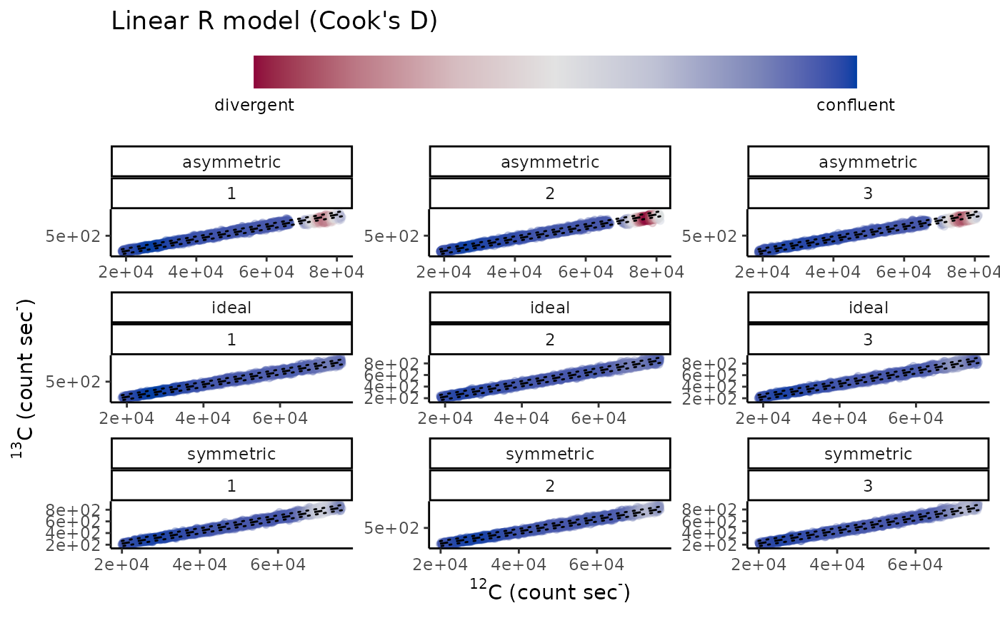

Diagnostics isotope count data
diag_R.Rddiag_R wrapper function for diagnostics on isotope count data
Usage
diag_R(
.IC,
.ion1,
.ion2,
...,
.nest = NULL,
.method = "CooksD",
.reps = 1,
.X = NULL,
.N = NULL,
.species = NULL,
.t = NULL,
.output = "inference",
.label = "none",
.meta = FALSE,
.alpha_level = 0.05,
.hyp = "none",
.plot = FALSE,
.plot_type = "static",
.plot_stat = NULL,
.plot_iso = FALSE,
.plot_outlier_labs = c("divergent", "confluent"),
.mc_cores = 1
)Arguments
- .IC
A tibble containing processed ion count data.
- .ion1
A character string constituting the rare isotope ("13C").
- .ion2
A character string constituting the common isotope ("12C").
- ...
Variables for grouping.
- .nest
A variable hat identifies a series of analyses to calculate the significance of inter-isotope variability.
- .method
Character string for the method for diagnostics (default =
"CooksD", see details).- .reps
Numeric setting the number of repeated iterations of outlier detection (default = 1).
- .X
A variable constituting the ion count rate (defaults to variables generated with
read_IC())- .N
A variable constituting the ion counts (defaults to variables generated with
read_IC().).- .species
A variable constituting the species analysed (defaults to variables generated with
read_IC()).- .t
A variable constituting the time of the analyses (defaults to variables generated with
read_IC()).- .output
Can be set to
"complete"which returnsstat_R()andstat_X()statistics, diagnostics, and inference test results following the selected method (see above argument.method);"augmented"for the augmented IC data after diagnostics;"diagnostic"returnsstat_R()andstat_X()statistics and outlier detection;"outlier"for outlier detection;"inference"for only inference test statistics results (default ="inference").- .label
For printing nice latex labels use
"latex"(default =NULL).- .meta
Logical whether to preserve the metadata as an attribute (defaults to TRUE).
- .alpha_level
Significance level of hypothesis test.
- .hyp
Hypothesis test appropriate for the selected method (default =
"none").- .plot
Logical indicating whether plot is generated.
- .plot_type
Character string determining whether the returned plot is
"static"ggplot2::ggplot2()(currently only supported option).- .plot_stat
Adds a statistic label to the plot (e.g. .
"M"), seepoint::nm_stat_Rfor the full selection of statistics available.- .plot_iso
A character string (e.g.
"VPDB") for the delta conversion of R (see?calib_R()for options).- .plot_outlier_labs
A character vector of length two for the colourbar text for outliers (default = c("divergent", "confluent")).
- .mc_cores
Number of workers for parallel execution (Does not work on Windows).
Value
A ggplot2::ggplot() is returned
(if .plot = TRUE) along with a
tibble::tibble() which can contain statistics
diagnostics, hypothesis test results associated with the chosen method and
depending on the argument .output.
Details
The diag_R function performs an internal call to stat_R to perform
diagnostics on the influence of individual measurements on the block-wise or
global (i.e., a complete analysis) statistics. It identifies potentially
influential measurements that indicate heterogeneity in the analytical
substrate or measurement. See
vignette("IC-diagnostics", package = "point") for more information on
how to use the function, and possible methods for outlier detection. Options
are "CooksD" (default), "Cameca", "Rm", "norm_E",
"CV", "IR", and "QQ", see the
vignette("IC-diagnostics", package = "point") for examples and
point::names_plot. The
argument .output can be used to toggle between "complete";
returning stat_R() and stat_X() statistics, diagnostics, and
inference test results, "augmented"; returning the augmented IC after
removing outliers, "diagnostic"; for only outlier detection results;
"diagnostic"; for statistics and outlier detection, or
"inference"; returns only inference test statistics results
(default = inference).
Examples
# Modelled ion count dataset
# Cook's D style diagnostic-augmentation of ion count data for
# isotope ratios
diag_R(simu_IC, "13C", "12C", type.nm, spot.nm, .plot = TRUE)

#> # A tibble: 9 × 7
#> execution type.nm spot.nm ratio.nm M_R_Xt.pr F_R_Xt.pr p_R_Xt.pr
#> <dbl> <chr> <int> <chr> <dbl> <dbl> <dbl>
#> 1 1 asymmetric 1 13C/12C 0.0111 63.2 1.28e-39
#> 2 1 asymmetric 2 13C/12C 0.0111 74.9 1.09e-46
#> 3 1 asymmetric 3 13C/12C 0.0111 71.9 6.70e-45
#> 4 1 ideal 1 13C/12C 0.0112 0.267 8.49e- 1
#> 5 1 ideal 2 13C/12C 0.0112 0.219 8.83e- 1
#> 6 1 ideal 3 13C/12C 0.0112 1.73 1.59e- 1
#> 7 1 symmetric 1 13C/12C 0.0110 105. 2.00e-64
#> 8 1 symmetric 2 13C/12C 0.0110 127. 2.81e-77
#> 9 1 symmetric 3 13C/12C 0.0110 122. 1.42e-74